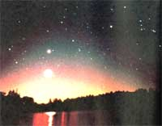
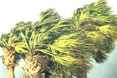
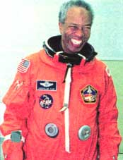

Making time for a new year.
The summer comes to an end and the autumn begins. It's not only time to go back to school, begin the harvest, and watch the migrations of birds. It's also time to Celebrate a Jewish New Year, look for slender Moons and Jupiter at its best, and stand alert for the threat of the most formidable type of hurricanes.
Around autumn equinox is not a good time to try to see the Moon as soon as possible after New Moon. This evening crescent is slung very low (in horizon haze and glow) off to the side of the setting Sun at this time of year (at least from our highly populated middle northern latitudes of Earth). The opposite is true of the Moon and planets in the dawns of August through October: their separation from the Sun is almost vertical, almost as steeply above where the Sun is going to rise as possible.
This latter fact is good news for anyone who wants to enjoy the conjunctions of Venus and Mars, and of Venus, Mercury, and the star Regulus this August and September. It also holds out a slight possibility of at least eastern U.S. observers seeing a wondrously slender lunar crescent low in the east only about 15 hours before New Moon at dawn on August 21st.
The opposite of New Moon is Full Moon. Full Moon is opposite (though rarely exactly opposite) the Sun in the sky. In other words, Full Moon rises around sunset, is highest around the middle of the night, and sets around sunrise. If the Moon is opposite the Sun in the sky, it will be pointing the same side of itself towards both Earth and Sun. And that means all of the Moon pointed at us will be sunlit: fully lit-Full.
Notice I said above that the Full Moon is rarely exactly opposite the Sun in our sky. If this were not true, there would be a lunar eclipse at every Full Moon. Most months, the Moon passes a little above (north of) or a little below (south of) Earth's shadow and isn't eclipsed. Other times all of it goes into Earth's "umbra," or dark central shadow, and there is a total lunar eclipse. Sometimes only part of the Moon enters the umbra and we see a partial eclipse. There is also what we call a "penumbral lunar eclipse."
The penumbra is the lighter, peripheral part of Earth's shadow. In a penumbral eclipse, the Moon doesn't go through any part of the umbra, only the penumbra. This penumbra is such a light shading that the Moon typically must enter half of its disk within the penumbra before we can see the slightest shadowing of the farthest-in part of the Moon. The penumbral lunar eclipse of August 7 is so slight it will be undetectable. But the one on September 6 will display a definite darkening on the Moon's upper or upper right edge-if you are far enough west in the U.S. for the Moon not to have set in the brightening dawn sky. Maximum eclipse occurs at 4:10 AM. PDT.
Whereas the Moon can be opposite the Sun every month-Full Moon-this only happens with the planets farther out from the Sun than we are about once a year (in the case of Mars, once every 26 months or so). When a planet is opposite the Sun in the sky we say it is at "opposition." The planet is then not only visible all night but is also at its brightest, closest and, therefore, biggest in telescopes.
The two planets at opposition in August-September 1998 are Uranus (on August 3) and Jupiter (on the night of September 15 to 16). Jupiter is extremely brilliant to even the unaided eye now, and even a small telescope at just 40x magnifying power makes its globe in the telescope look as big as the Moon does to the naked eye. Uranus is a much more distant and dimmer world-just visible to the naked eye under superb sky conditions (no moonlight, far from city lights, etc.) but usually requiring binoculars.
Believe it or not, giant Jupiter has recently fallen into third place behind Saturn and Uranus in the category of having the most moons. Saturn leads the competition, with at least 18 confirmed moons. But two more were discovered around Uranus late last year, bringing its total to 17. Jupiter has only 16 known moons. By the way, all but one of the moons of Uranus can be said to have been named after characters in Shakespeare. My suggestion is that the two newly discovered moons of Uranus be called Lear and The Fool!
August and September bring us not only the greatest number of Atlantic hurricanes but also the most notoriously powerful variety-the Cape Verde storms. These mighty whirls begin their life in the waters off Africa's Cape Verde and then spend a week, ten days, or even longer crossing the Atlantic before committing to where they will hit. Will they miss Florida and enter the Gulf of Mexico? Often enough, they can turn up the East Coast, either brushing by or making landfall to produce devastation.
The peak of the hurricane season is reached about September 10, around which time a slight majority of the storms may be of the Cape Verde variety. The Cape Verde breeding grounds die out rapidly after September, but anyone who lives within 100 miles of the Atlantic or Gulf Coast should maintain vigilance at least through October. After that, hurricanes are rare and seldom have posed a major threat to land areas.
The late and great dean of American weather historians, David M. Ludlum presented this variation on an old Florida proverb:
Hurricane Alert Calendar
May not today
June radios in tune
July all stand by
August beware you must
September time to unlimber
October not yet over
November remember
Rosh Hashanah is the Jewish New Year. The name means "head of the year." But exactly when does it occur? The rule would seem to be that it starts at sunset on the day of the New Moon closest to the autumn equinox. For instance, this September the equinox takes place at 1:37 A.M. EDT (Eastern Daylight Saving Time) on September 23. The New Moon closest to then occurs at 1:01 P.M. EDT on September 20. Rosh Hashanah begins at sunset on September 20.
Rosh Hashanah is the first day of Tishri, the first month of the Jewish year. The 10th day of Tishri is Yom Kippur, the Day of Atonement, the most holy and solemn day of the Jewish religious year. It is deemed improper for Yom Kippur to fall on the day before or after the weekly Jewish Sabbath, Shabbat, and it is forbidden for Rosh Hashanah to fall on Shabbat. The way to ensure that the two holidays fall on permissible days of the week is to vary the length of the Jewish religious year.
There are six different possible lengths for the Jewish year. The biggest variation is due to whether or not the year contains the leap month Ve-Adar. Ve-Adar is added to years 3, 6, 8, 11, 14, 17, and 19 of each 19-year cycle. Without Ve-Adar, the year can be 353, 354, or 355 days, depending on whether or not a day is added to or subtracted from certain months; with Ve-Adar, it can be 383, 384, or 385 days. This complicated scheme results in Rosh Hashanah sometimes being delayed for a day or two after New Moon.
But there is more to the story of the Jewish calendar. Its starting point is regarded as being the Creation, which is calculated (from the generations in Genesis) as having occurred in 3761 B.C. This September of A.D. 1998, Rosh Hashanah begins the Jewish year 5759 AM-anno mundi, "year of the world." And yet the form and month names of the Jewish calendar used for the past few thousand years originated during the Babylonian exile of the Jews, and were influenced by the Babylonian calendar. The Jews took on the Babylonian names for the months in these forms: Tishri, Heshvan, Kislev, Tevet, Shevat, Adar, Nisan, Ivyar, Sivan, Tammuz, Av, Elul. The only names of months recalled from the pre-Exilic calendar of the Jews are those found in the Bible: Aviv (1st month), Ziv (2nd), Ethanim (7th), and Bul (8th).
There was, for many centuries, a debate about whether the beginning of each month-including the first month and thus Rosh Hashanah-should be based on observation of the Moon or on calculation. Calculation eventually won out. But it is fascinating how observations were made and communicated. New Moon itself is too near the Sun in the sky (and is almost entirely the dark side of the Moon facing us) to see. Instead, we must usually wait a day or two after New Moon to make the first sighting of a thin lunar crescent in the west after sunset. People who claimed to have seen the crescent after New Moon were questioned by priests to ascertain the veracity of their report. But each month the sighting of the "Rosh Chodesh," the beginning (head) Moon, was watched for by the priests themselves from up on the Mount of Olives in Jerusalem. When the Moon was sighted, the priests would light a signal fire. Priests on other mountains would detect the signal fire, light their own, and thereby spread the news farther. In this way, the news that the month had officially begun was spread as far north as Safed, about 140 miles from Jerusalem, and at one time may have even extended all the way to Babylonia. Unfortunately, enemies of the Jews lit false fires to try to trick and confuse them. The Romans eventually outlawed the lighting of the signal fires altogether.
AUGUST 1998
1 Lammas ("Loaf-mass"-religious holiday based on old Northern European harvest festival).
2 Venus and Mars, low in the east-northeast in the hour before sunrise, within 2 degrees of each other from now until August 8th.
3 Colorado Day; Uranus at opposition-visible all night long and brightest (but still requires binoculars and detailed star map to see, like in May issue of Sky & Telescope magazine); binoculars show a fairly bright star near the bright Mars and extremely bright Venus this morning.
4 Venus less than 1 degree (much less than your little finger viewed at arm's length) from tremendously less bright Mars this morning and tomorrow morning.
5 Greatest rainstorm in New Jersey history this day in 1843- estimated to have dropped about 22 inches of rain in one location.
7 FULL MOON, 10:10 P.M. EDT; penumbral eclipse of the Moon, but too slight to be viewable (see text of column); halfway point of summer.
9 Saturn's rings at greatest tilt of 1998-almost 17 degrees from edge on, the most since 1992 (but they will be almost this tilted for rest of year). The planet is the brightest point of light in the east a few hours after midnight.
10 St. Laurence's Day-thus the Perseid meteors which occur around now have been called "St. Laurence's Tears" (and indeed fiery tears are appropriate for a martyr who was burned to death on a griddle); Victory Day in Rhode Island; Sun enters constellation Leo, 2 P.M. EDT.
11 Dog Days end today, according to some loremasters.
12 Build-up of numbers just before enhanced peak of Perseid meteor shower may occur in hours before dawn today, with traditional peak this evening into following morning. However, many of these mostly after-midnight "shooting stars" from the northeast and north will be hard to see due to bright moonlight in the sky.
13 Mercury at inferior conjunction with the Sun, hence lost from view in Sun's glare. 14 LAST QUARTER MOON, 3:48 P.M. EDT.
16 Bennington Battle Day in Vermont; Saturn "stationary" and begins retrograde (westward) motion relative to the stars.
18 On this date in 1955, just five days after the remnants of Hurricane Connie pounded the Mid-Atlantic states, the remnants of Hurricane Diane battered them-90 died in Pennsylvania.
19 Venus passes through Beehive Star Cluster (M44), but a telescope and good conditions are needed to see the brighter stars of the cluster here low in the sky as morning twilight gets underway (see Sept. 1).
20 Extremely slender lunar crescent, just possibly visible very low in the east-northeast about 30 minutes before sunrise today (use binoculars). 21 NEW MOON, 10:03 P.M. EDT; annular eclipse of the Sun, visible in portions of Indonesia and Polynesia.
23 Sun enters astrological sign Virgo, but astronomically is still in Leo; first and so far only spacecraft passage of Neptune-that of Voyager 2 this day in 1989.
26 Women's Equality Day.
27 Mercury just 2 degrees right of Venus, low in east-northeast about 45 minutes before sunrise.
30 FIRST QUARTER MOON, 1:06 A.M. EDT; 15 years ago this day, Guion Bluford, Jr. became the first African-American in space.
31 Mercury at greatest morning elongation, 18 degrees from Sun (but it brightens and remains prominent well into September).
SEPTEMBER 1998
1 Mars in Beehive Star Cluster before dawn today-telescope needed to see cluster stars.
2 Great Fire of London started this day in 1666.
3 High temperature of 106°F in Paterson, New Jersey, this day in 1953.
4 Asteroid Ceres less than 1 degree south of star Aldebaran this morning (telescope and finder chart needed-see Sky & Telescope magazine).
6 FULL MOON-7:21 A.M. EDT; this Full Moon is slightly farther from the fall equinox than the October Full Moon, which therefore qualifies as "Harvest Moon" this year, penumbral eclipse of the Moon, best seen in U.S. from Pacific Coast, Alaska, Hawaii (see text of column for more information); before dawn, Venus is within a degree of the bright star Regulus, with Mercury nearby (due to these bodies' lowness in brightening morning twilight, binoculars are recommended for viewing).
7 Labor Day; Venus, Mercury, and Regulus form a compact triangle little more than 1 degree long on each side.
9 Admission Day in California; Moon is passing Saturn this night.
11 Venus is less than a degree from Mercury at this dawn; start of Diocletian year 1715.
12 LAST QUARTER MOON, 9:58 P.M. EDT; southeastern half of U.S. sees Moon occult (hide) bright star Aldebaran in predawn hours; Defenders Day in Maryland.
13 Grandparents Day; all-time world record high temperature of 136°F this day in 1922 in Azizia, Libya.
14 Start of Byzantine year 7507; in 1944 this day, Atlantic City, New Jersey, was battered by its most damaging storm of the century, with winds up to 82 mph and record-high tide.
15 Jupiter at opposition, brightest, and visible all night long (see text of column).
16 Sun enters constellation Virgo, 7 P.M. EDT; asteroid Pallas at opposition.
17 Citizenship Day.
20 NEW MOON, 1:01 P.M. EDT; Rosh Hashanah begins at sunset-start of the Jewish year 5759 A.M.
21 Long Island-New England Hurricane of 1938 accelerated to amazing forward speed of about 60 mph and struck unexpectedly, killing about 600 people and doing tremendous damage.
22 Jupiter just over 1 degree east-southeast of the asteroid Pallas (the latter is dim enough to require a telescope).
23 Autumn equinox, 1:37 A.M. EDT; Sun enters astrological sign Libra at equinox but has only just entered constellation Virgo.
25 Mercury at superior conjunction with the Sun (and therefore unviewable in the Sun's glare).
28 FIRST QUARTER MOON, 5:11 P.M. EDT.
29 Yom Kippur begins at sunset; Michaelmas; Space Shuttle Discovery lifted off this day in 1988-first Shuttle launch since the Challenger disaster of January 1986.
|
 JERRY SCHAD/PHOTO RESEARCHERS A crescent moon and Venus at dawn over San Diego. |
 MARISA PRYOR/EARTH SCENES Palm trees weather a 1993 Sarasota, Florida, storm. |
 Astronaut Guion Bluford, Jr. |